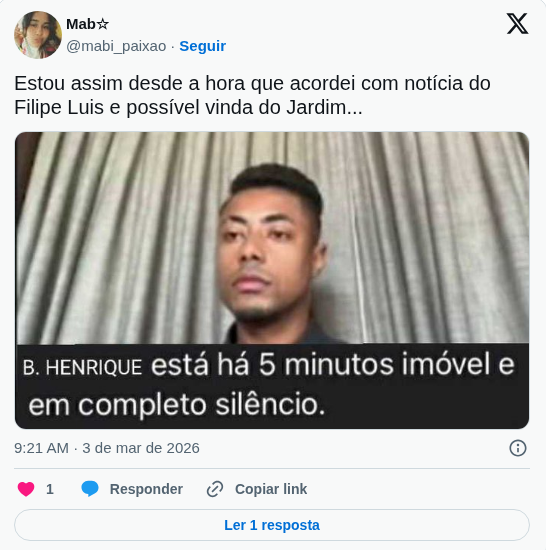
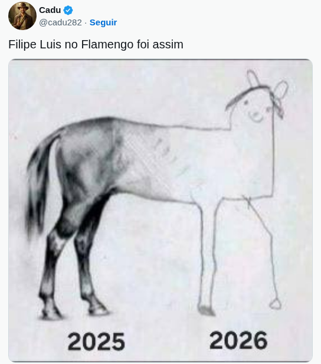

Na madrugada desse dia 03/03/2026 o treinador e o clube encerraram o vínculo e deu o que falar nas redes, veja abaixo:
/i.s3.glbimg.com/v1/AUTH_da025474c0c44edd99332dddb09cabe8/internal_photos/bs/2026/y/F/nlyNM0RPmdpfUMtd9USw/hcd0egyw8aahym8.jpg)


A despedida de Filipe Luís do comando técnico do Flamengo encerra um capítulo de profunda identificação entre o profissional e a instituição. Se como jogador ele foi o "cérebro" da geração de 2019, levantando 10 troféus e redefinindo a lateral-esquerda no Brasil, como treinador ele aceitou o desafio de liderar o clube em um momento de transição e alta voltagem emocional.
Independentemente do desfecho desta etapa, o nome de Filipe Luís permanece gravado na galeria dos grandes. O Flamengo agradece ao profissional pela dedicação, pelo profissionalismo exemplar e pela história escrita em cores vermelha e preta. Obrigado, Filipe.